Next: Non-recirculating filter, second form
Up: Elementary filters
Previous: Elementary filters
Contents
Index
Elementary non-recirculating filter
The non-recirculating comb
filter may be generalized to yield the design shown in Figure 8.7.
This is the
elementary non-recirculating filter,
of the first form. Its single, complex-valued parameter 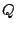 controls the
complex gain of the delayed signal subtracted from the original one.
Figure 8.7:
A delay network with a single-sample delay and a complex
gain . This is the non-recirculating elementary filter, first form. Compare
the non-recirculating comb filter shown in Figure 7.3,
which corresponds to choosing 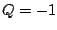 here.
| 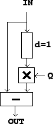 |
To find its frequency response, as in Chapter 7 we feed the delay network
a complex sinusoid
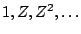 whose frequency is
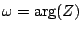.
The  th sample of the input is
th sample of the input is  and that of the output
is
and that of the output
is
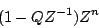
so the transfer function is
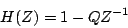
This can be analyzed graphically as shown in Figure 8.8.
The real numbers
 and
and  are the magnitude and argument of the complex number :
are the magnitude and argument of the complex number :
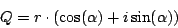
The gain of the filter is the distance from the point to the point 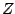
in the complex plane. Analytically we can see this because
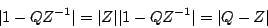
Graphically, the number 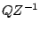 is just the number rotated backwards
(clockwise) by the angular frequency  of the incoming sinusoid. The
value
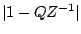 is the distance from to
of the incoming sinusoid. The
value
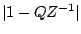 is the distance from to  in the complex
plane, which is equal to the distance from to .
in the complex
plane, which is equal to the distance from to .
Figure 8.8:
Diagram for calculating the frequency response of the
non-recirculating elementary filter
(Figure 8.7). The frequency response is given by the length of the
segment connecting to in the complex plane.
| 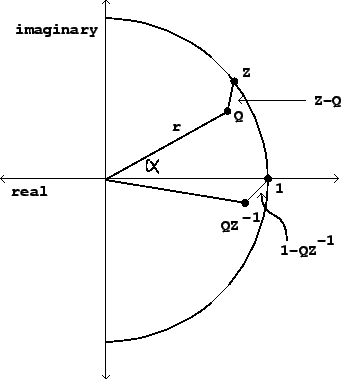 |
As the frequency of the input sweeps from 0 to  , the point travels
couterclockwise around the unit circle. At the point where
,
the distance is at a minimum, equal to 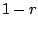. The maximum occurs which is
at the opposite point of the circle. Figure 8.9 shows the transfer
function for three different values of 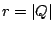.
, the point travels
couterclockwise around the unit circle. At the point where
,
the distance is at a minimum, equal to 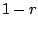. The maximum occurs which is
at the opposite point of the circle. Figure 8.9 shows the transfer
function for three different values of 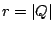.
Figure 8.9:
Frequency response of the elementary non-recirculating filter
Figure 8.7. Three values of are used, all with the
same argument (-2 radians), but with varying absolute value (magnitude) .
| 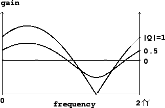 |
Next: Non-recirculating filter, second form
Up: Elementary filters
Previous: Elementary filters
Contents
Index
Miller Puckette
2006-12-30